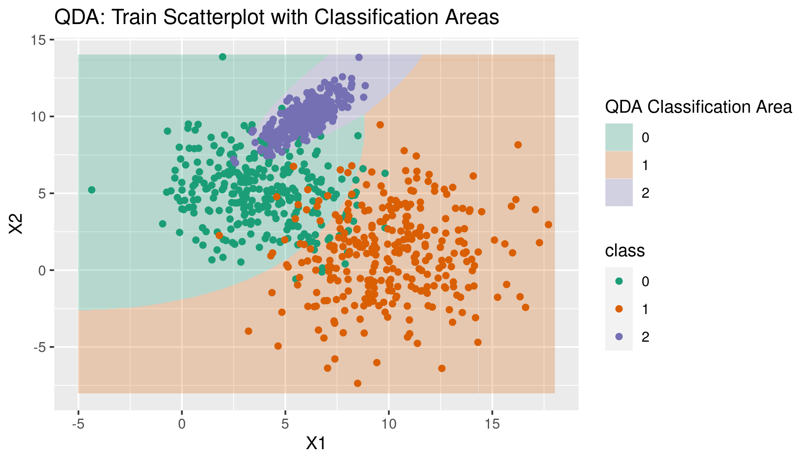

Implementation
The Bayes Classifier and Decision Boundaries
Creating the discriminant functions, classifying with the Bayes classifier, and classifying observations in our training set using the population parameters we know is straightforward in. This will mirror what we did in the multivariate LDA example but with our new discriminant functions.
First, we’ll construct vectors of our population means by class as well as the class-wise prior probabilities. In this example we know that the class-wise prior probabilities are equal, but we’ll calculate them each separately for thoroughness.
pop_c0_mean_vec <- c(pop_mean_c0_X1, pop_mean_c0_X2)
pop_c1_mean_vec <- c(pop_mean_c1_X1, pop_mean_c1_X2)
pop_c2_mean_vec <- c(pop_mean_c2_X1, pop_mean_c2_X2)
c0_prior <- n / (n * 3)
c1_prior <- n / (n * 3)
c2_prior <- n / (n * 3)Then we’ll build our three discriminant functions and apply them inside the decision rule for classification described above.
d0_bayes <- function(x_vec){
-.5 * log(norm(c0_sigma, type = "2")) -
.5 * t(x_vec - mu_c0) %*% solve(c0_sigma) %*% (x_vec - mu_c0) +
log(c0_prior)
}
d1_bayes <- function(x_vec){
-.5 * log(norm(c1_sigma, type = "2")) -
.5 * t(x_vec - mu_c1) %*% solve(c1_sigma) %*% (x_vec - mu_c1) +
log(c1_prior)
}
d2_bayes <- function(x_vec){
-.5 * log(norm(c2_sigma, type = "2")) -
.5 * t(x_vec - mu_c2) %*% solve(c2_sigma) %*% (x_vec - mu_c2) +
log(c2_prior)
}
bayes_classifier <- function(x_vec){
score_c0 <- d0_bayes(x_vec)
score_c1 <- d1_bayes(x_vec)
score_c2 <- d2_bayes(x_vec)
if (score_c0 > score_c1 & score_c0 > score_c2) {
0
} else if (score_c1 > score_c0 & score_c1 > score_c2) {
1
} else {
2
}
}
train_sample_df$bayes_predicted_y <- apply(train_sample_df[, c("X1", "X2")],
1, bayes_classifier)The QDA Classifier and Decision Boundaries
Just like in the multivariate LDA case, the only difference between the Bayes classifier above and the QDA classifier is that we almost surely can’t know the population covariance matrices and means. To move forward, we need to estimate them.
As in the LDA examples, we use the empirical class means as our mean estimates. Unlike the multivariate LDA case where we assume identical variance matrices between classes, we do not need to estimate our covariance matrix in a weighted fashion across classes: we can simply use R’s `cov’ function.
First we’ll estimate our means and covariance matrices by class.
sample_c0_mean_vec <- c(mean(train_sample_df$X1[train_sample_df$y == 0]),
mean(train_sample_df$X2[train_sample_df$y == 0]))
sample_c1_mean_vec <- c(mean(train_sample_df$X1[train_sample_df$y == 1]),
mean(train_sample_df$X2[train_sample_df$y == 1]))
sample_c2_mean_vec <- c(mean(train_sample_df$X1[train_sample_df$y == 2]),
mean(train_sample_df$X2[train_sample_df$y == 2]))
sample_cov_mat_c0 <- cov(train_sample_df %>%
filter(y == 0) %>%
dplyr::select(X1, X2))
sample_cov_mat_c1 <- cov(train_sample_df %>%
filter(y == 1) %>%
dplyr::select(X1, X2))
sample_cov_mat_c2 <- cov(train_sample_df %>%
filter(y == 2) %>%
dplyr::select(X1, X2))The only things left to calculate are the classwise prior probabilities. Again, we know that these are equal because of our generated samples so we don’t really need to calculate them separately, but we will anyway for thoroughness.
c0_prior <- nrow(train_sample_df[train_sample_df$y == 0,]) /
nrow(train_sample_df)
c1_prior <- nrow(train_sample_df[train_sample_df$y == 1,]) /
nrow(train_sample_df)
c2_prior <- nrow(train_sample_df[train_sample_df$y == 2,]) /
nrow(train_sample_df)Then, just like with the Bayes classifier, we create our discriminant functions and apply them to the data via a classifier function.
d0_QDA <- function(x_vec){
-.5 * log(det(sample_cov_mat_c0)) -
.5 * t(x_vec - sample_c0_mean_vec) %*% solve(sample_cov_mat_c0) %*%
(x_vec - sample_c0_mean_vec) +
log(c0_prior)
}
d1_QDA <- function(x_vec){
-.5 * log(det(sample_cov_mat_c1)) -
.5 * t(x_vec - sample_c1_mean_vec) %*% solve(sample_cov_mat_c1) %*%
(x_vec - sample_c1_mean_vec) +
log(c1_prior)
}
d2_QDA <- function(x_vec){
-.5 * log(det(sample_cov_mat_c2)) -
.5 * t(x_vec - sample_c2_mean_vec) %*% solve(sample_cov_mat_c2) %*%
(x_vec - sample_c2_mean_vec) +
log(c2_prior)
}
QDA_classifier <- function(x_vec){
score_c0 <- d0_QDA(x_vec)
score_c1 <- d1_QDA(x_vec)
score_c2 <- d2_QDA(x_vec)
if (score_c0 > score_c1 & score_c0 > score_c2) {
0
} else if (score_c1 > score_c0 & score_c1 > score_c2) {
1
} else {
2
}
}
train_sample_df$QDA_predicted_y <- apply(train_sample_df[, c("X1", "X2")],
1, QDA_classifier)Visualizing the Decision Boundaries
The nice non-linear decision boundaries shown in Elements of Statistical Learning were created through an extensive contouring process, which is way outside the scope of this working example.3 While we won’t plot the decision boundaries directly, we can pretty easily plot the decision areas using an approach similar to that we use for plotting a maximum likelihood surface in the logistic regression example. This is a hacky approach in this example in a way that it’s not in the logistic regression example, but if it works it should do the trick well enough.
The basic idea is that we should be able to apply the QDA classifier to a set of Cartesian coordinates for our X1 and X2 variables and then show the approximate areas in which the QDA classifier would choose one class or another. This obviously gives us the approximate decision boundaries between classes as well.
First, we can create our “surface” of coordinates by creating a tibble of every combination of X1 and X2 values within some space. We’ll restrict our space to the smallest and largest train sample values for X1 and X2. We obviously can’t classify every point in this space, so we’ll use seq to create a tibble of coordinates from approximately the smallest and largest values of our two variables in some increment (in this case we’ll use .05).
X1_vec <- seq(floor(min(train_sample_df$X1)), ceiling(max(train_sample_df$X1)), .05)
X2_vec <- seq(floor(min(train_sample_df$X2)), ceiling(max(train_sample_df$X2)), .05)
surface <- expand_grid(X1_vec, X2_vec)
colnames(surface) <- c("X1", "X2")We’ve already created our LDA classifier, so we can simply apply it to our surface tibble of coordinates.
surface$class <- apply(surface[, c("X1", "X2")], 1, QDA_classifier)Rather than geom_contour_filled like in the logistic example, we use geom_tile because our decision areas aren’t parts of a 3D surface and the classifications aren’t part of a continuous scale. ggplot2 layers plots based on what order they are expressed in the ggplot expression, so instead of adding the tile layer to our existing scatterplot (which would layer the tiles on top of the scatter points) we will rewrite the geom_point expression that provides the scatterplot after the geom_tile expression (which layers the scatterplot on top of the background of the classification areas).
QDA_decision_areas <- ggplot() +
geom_tile(data = surface, aes(x = X1, y = X2, fill = as.factor(class)), alpha = .25) +
scale_fill_brewer(palette = "Dark2", name = "QDA Classification Area") +
geom_point(data = train_sample_df, aes(x = X1, y = X2, color = as.factor(y))) +
scale_color_brewer(palette = "Dark2", name = "class") +
labs(title = "QDA: Train Scatterplot with Classification Areas")
QDA_decision_areas
This is clearly a longer way of saying “I don’t know how to do it and don’t want to learn it for this.”↩︎